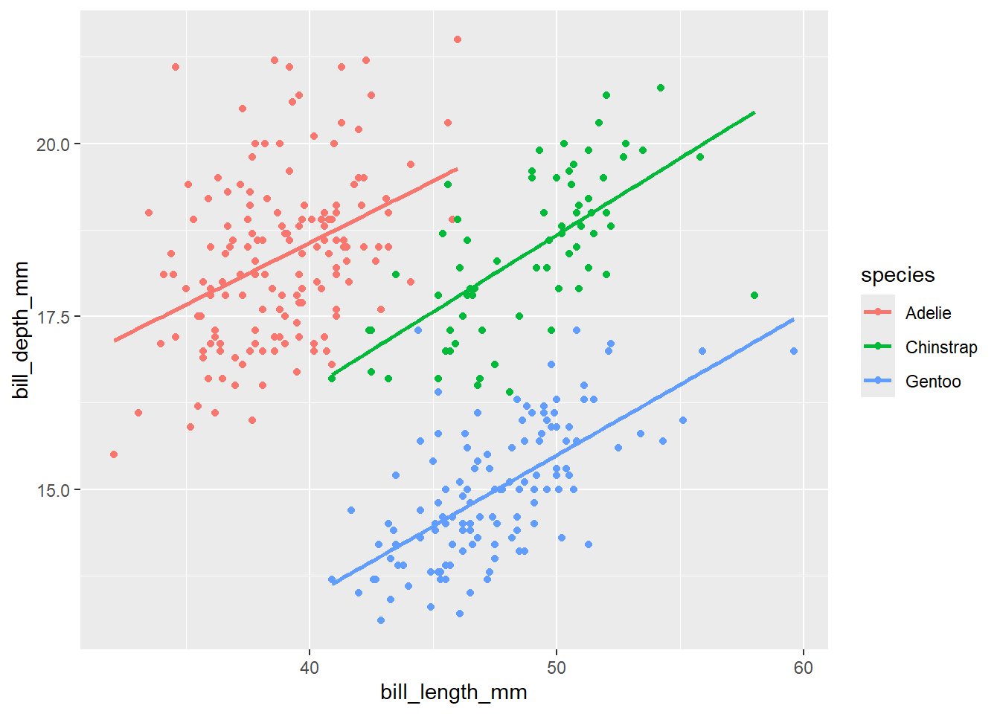

D Frequently and not-so-frequently asked questions
What is the difference between double "" and single '' quotes?
There is no difference. Both are valid to quote text/strings. Pay attention when you use quotes in quotes like “My solutions to exercise ‘Find the mean’”. Then quotes inside quotes must be different (either “” outside and ’’ inside or the other way round). However, they may be rendered differently between plain R and R Markdown in e.g. the title.
print('I am a text.')## [1] "I am a text."
print("So am I.")## [1] "So am I."
print("I am a 'quote' in a text.")## [1] "I am a 'quote' in a text."
print('So am "I", but not so nice looking.')## [1] "So am \"I\", but not so nice looking."When do we use the pipe operator %>% and when the plus sign + to connect lines of code?
The pipe operator %>% is used to compose functions. Instead of saving the result of every function and then passing this result explicitly to the next function, we can omit the intermediate saving and “pipe” the results through:
## # A tibble: 1 × 1
## mean
## <dbl>
## 1 38.8
# The same result, but not as tibble!
filtered_data <- filter(penguins, species == 'Adelie')
mean(filtered_data$bill_length_mm, na.rm = TRUE)## [1] 38.79139More details on pipes here.
The plus sign + is used as operator in ggplot2 only, to construct a graph.
ggplot(data = penguins, aes(x = bill_length_mm, y = bill_depth_mm, col = species)) +
geom_point() +
geom_smooth(se = FALSE, method = lm)